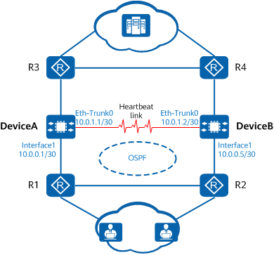

Controlling the Costs of Dynamic Routes Using Device Priority
After the device is enabled to adjust the cost of the dynamic route based on the active and standby states and then hot standby is enabled on a device, the device can dynamically adjust the costs of the routes advertised by OSPF and OSPFv3 based on the device priority and dynamically adjust the MED values of the routes advertised by BGP. The detailed procedure is as follows:
- When the priority of the local device is higher than that of the peer device, the local device advertises routes according to the OSPF, OSPFv3, or BGP route configuration.
- When the priority of the local device is lower than that of the peer device, the device adjusts the costs of the routes advertised by OSPF and OSPFv3, and adjusts the MED values of the routes advertised by BGP according to the following methods:
- OSPF: The cost of the routes advertised by OSPF is changed to a specified value. The default cost is 65500. You can run the hrp adjust ospf-cost enable slave-cost command to change the value.
- OSPFv3: The cost of the routes advertised by OSPFv3 is changed to a specified value. The default cost is 65500. You can run the hrp adjust ospfv3-cost enable slave-cost command to change the value.
- BGP: A certain value is added to the configured BGP MED values as the MED values of the routes advertised by BGP. The default value to be added is 100. You can run the hrp adjust bgp-cost enable slave-cost command to change the value.

Different from OSPF and OSPFv3, the BGP MED value displayed in the display bgp routing-table command output is the local configured MED value, not the adjusted MED value. Nevertheless, the device advertises routes based on the adjusted BGP MED value. For OSPF and OSPFv3, the cost displayed in the display command output is the same as the actual cost.
- When the two devices have the same priority, the device advertises routes according to the OSPF, OSPFv3, or BGP route configuration. If you specify a device as the standby device or a device remains in the standby state because batch data backup is not complete after the device restarts, the device adjusts the costs of the routes advertised by OSPF and OSPFv3 and adjusts the MED values of the routes advertised by BGP. The adjustment method is the same as that when the priority of the local device is lower than that of the peer device.
The following example describes how to use the device priority to control the costs of routes advertised by OSPF.
As shown in Figure 1, DeviceA and DeviceB form a hot standby network. OSPF runs between DeviceA, DeviceB, R1, and R2.

As shown in Figure 2, DeviceA and DeviceB are working properly and have the same priority. DeviceA advertises routes according to the OSPF configuration, as shown in Figure 3. Because the hrp device standby command is run on DeviceB, the cost of the OSPF routes advertised by DeviceB is changed to 65500, as shown in Figure 4.
As shown in Figure 5, the upstream service interface of DeviceA is faulty, and DeviceB is normal. The priority of DeviceA is lower than that of DeviceB. The cost of the OSPF routes advertised by DeviceA is changed to 65500, as shown in Figure 6, and the cost of the OSPF routes advertised by DeviceB is changed to 1, as shown in Figure 7.